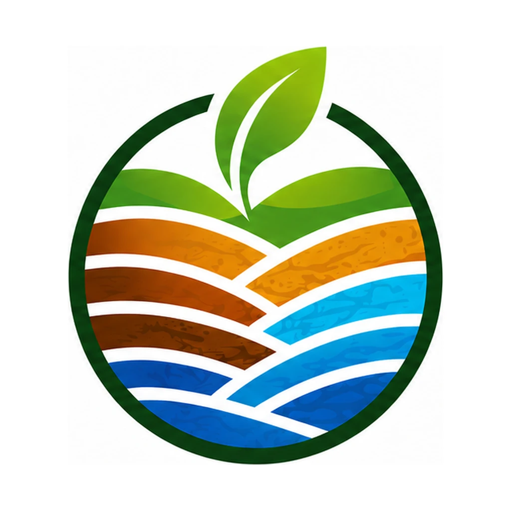

Segurança jurídica e eficiência técnica para o desenvolvimento ambiental, mineral e industrial.
Unimos geologia, engenharia, geoprocessamento avançado e segurança do trabalho para destravar licenciamentos, regularizar empreendimentos e garantir a conformidade total do seu negócio.

Soluções integradas por setor
Selecione o seu segmento e veja como garantimos a regularidade e a produtividade da sua operação.
Industrial, Comercial e Segurança do Trabalho
Apoio técnico completo a indústrias, operações logísticas e empresas de serviços para operar sem riscos de autuações ou paralisações.
- Licenciamento ambiental e renovação de licenças
- Plano de Gerenciamento de Resíduos Sólidos (PGRS)
- Programas e laudos de Segurança do Trabalho
- Atendimento a condicionantes e notificações de órgãos ambientais
Setor Mineral
Assessoria mineral completa, do requerimento inicial junto à ANM até a lavra e o fechamento de mina, com foco em legalidade e eficiência produtiva.
- Requerimentos e acompanhamento de processos na ANM
- Plano de Aproveitamento Econômico e planos de lavra
- Relatórios técnicos e mapeamento geológico
- Recuperação de Áreas Degradadas (PRAD) e fechamento de mina
Agronegócio e Setor Rural
Suporte técnico e ambiental para produtores e propriedades rurais que querem produzir com segurança jurídica e acesso a financiamento.
- Regularização fundiária e Cadastro Ambiental Rural (CAR)
- Georreferenciamento de imóveis rurais
- Licenciamento de atividades agrossilvipastoris
- Projetos técnicos para obtenção de crédito rural
Recursos Hídricos e Geoprocessamento
Estudos hidrogeológicos e mapeamento inteligente para assegurar o uso legal e estratégico da água e dos recursos naturais.
- Outorgas de uso da água
- Regularização e tamponamento de poços
- Estudos hidrogeológicos
- Aerofotogrametria, geoprocessamento e diagnósticos ambientais
Conformidade trabalhista e ambiental, integradas.
Programas, laudos e treinamentos elaborados pela mesma equipe que cuida do seu licenciamento: menos fornecedores, menos retrabalho e nenhuma lacuna entre as exigências.
Programa de Gerenciamento de Riscos
Inventário de riscos e plano de ação conforme a NR-01.
Controle Médico de Saúde Ocupacional
Programa alinhado ao PGR, conforme a NR-07.
Laudo das Condições Ambientais
Base técnica para aposentadoria especial e obrigações previdenciárias.
Treinamentos normativos
Capacitações obrigatórias para equipes de campo, indústria e mineração.
Insalubridade e periculosidade
Avaliações técnicas para respaldar a gestão de pessoal.
Suporte às informações de SST
Dados técnicos organizados para os eventos de saúde e segurança.
Sua empresa está com PGR, PCMSO e LTCAT em dia? Fazemos uma checagem rápida sem compromisso.
Verificar minha empresaTécnica rigorosa, tecnologia e acompanhamento próximo
Com sede em Santarém, atuamos em todo o Oeste do Pará com trâmite direto junto à ANM, SEMAS-PA, SEMMA, INCRA e IBAMA, transformando exigências técnicas em viabilidade operacional.
Análises técnicas precisas
Estudos fundamentados na legislação vigente que reduzem o risco de indeferimento nos órgãos fiscalizadores.
Geoprocessamento avançado
Mapeamento e monitoramento espacial de recursos naturais com agilidade e precisão cartográfica.
Gestão personalizada
Estratégias sob medida e acompanhamento em todas as etapas, equilibrando desenvolvimento econômico e conservação.
Do primeiro contato à aprovação
Diagnóstico
Entendemos a atividade, a área e a situação legal pelo WhatsApp ou visita técnica.
Proposta
Escopo claro, prazos e documentos necessários, sem surpresas.
Execução técnica
Campo, geoprocessamento, estudos e elaboração de projetos e laudos.
Protocolo e acompanhamento
Trâmite nos órgãos e resposta a exigências até a emissão final.
Parcerias que constroem resultados sustentáveis
Vamos destravar o seu projeto
Responda 4 perguntas rápidas e continue o atendimento direto no WhatsApp com um especialista.